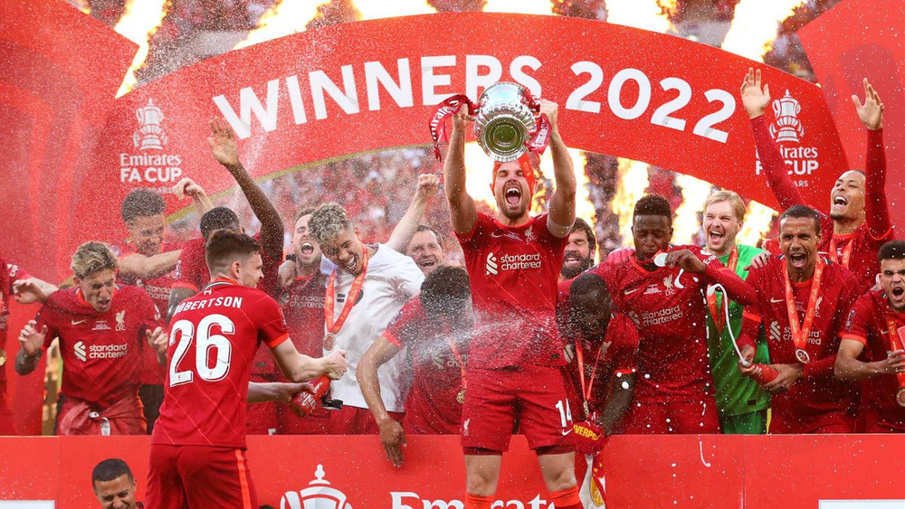
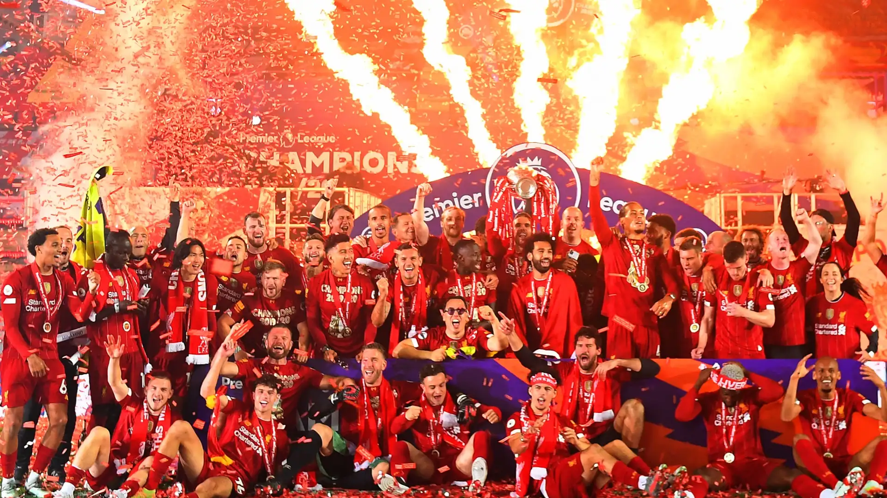
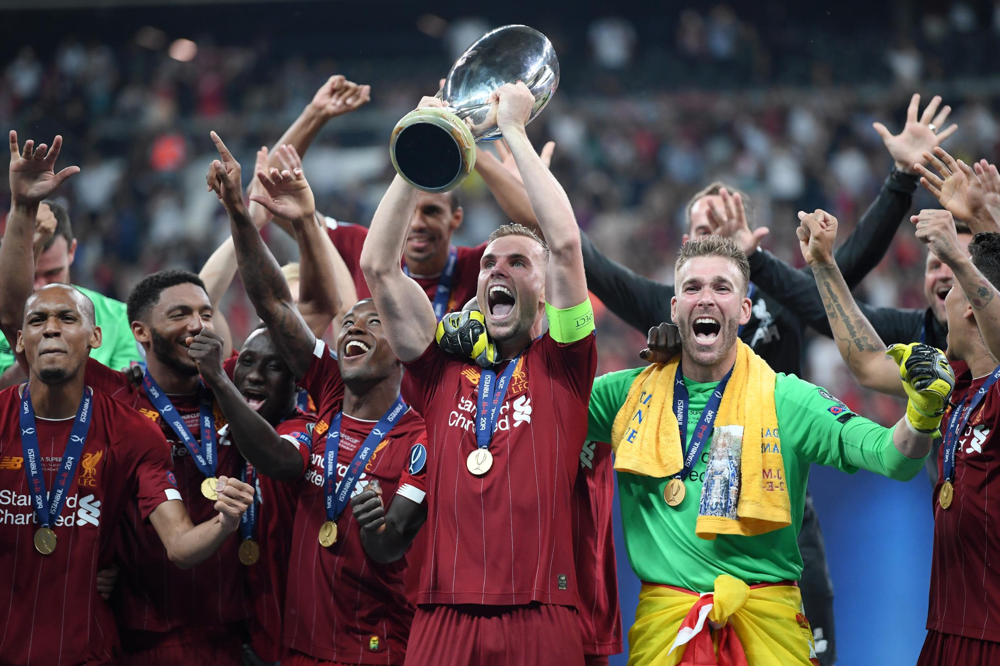
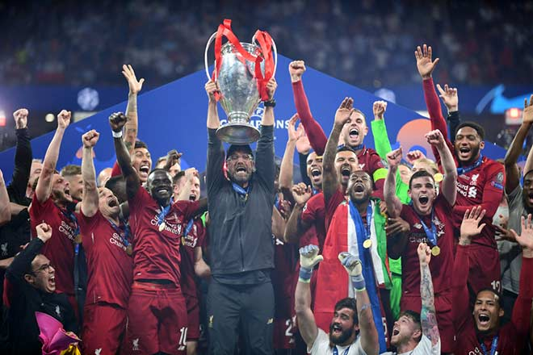
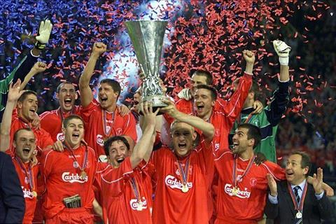

Liverpool FC
History
Liverpool Football Club is a professional football club based in
Liverpool, England. The club competes in the Premier League, the top tier
of English football. Founded in 1892, the club joined the Football League
the following year and has played its home games at Anfield since its
formation. Liverpool is one of the most valuable and widely supported
clubs in the world.
Title
FA cup: 1964*, 1965*, 1966, 1974, 1976, 1977*, 1979, 1980, 1982, 1986*, 1988, 1989, 1990*, 2001, 2006, 2022

EPL cup: 1980–81, 1981–82, 1982–83, 1983–84, 1994–95, 2000–01, 2002–03, 2011–12, 2021–22, 2023–24

Super cup: 1977, 2001, 2005, 2019

UEFA cup: 1976–77, 1977–78, 1980–81, 1983–84, 2004–05, 2018–19

UEFA Europa League cup: 1972–73, 1975–76, 2000–01
